Régression linéaire simple
Hanna Bacave
💭 Avant de commencer
- Retour sur le quiz du dernier cours :
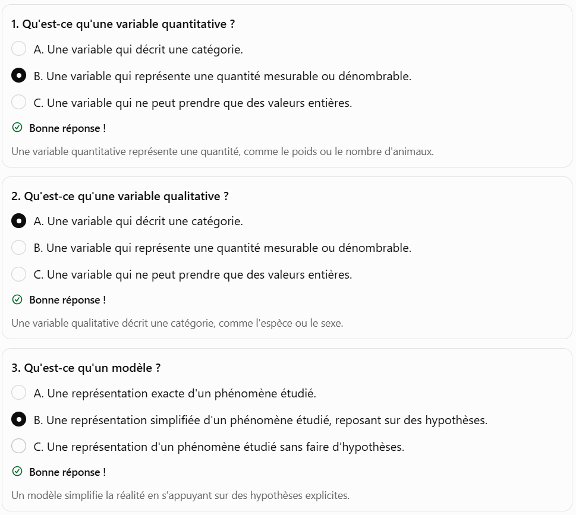
- Un petit exemple concret :
\[ \small \begin{array}{c|ccccccc} \small \text{Taille} & \small \boxed{155} & \small \boxed{160} & \small \boxed{160} & \small \boxed{163} & \small \boxed{165} & \small \boxed{170} & \small \boxed{175} \\[8pt] \text{Poids} & \small \boxed{70} & \small \boxed{75} & \small \boxed{76} & \small \boxed{78} & \small \boxed{80} & \small \boxed{85} & \small \boxed{??} \end{array} \]
🔍 Introduction : Un modèle linéaire, qu’est-ce c’est ?
Un modèle linéaire cherche à expliquer une variable \(Y\) à partir d’une ou plusieurs variables explicatives \(X\), en supposant qu’il existe une relation linéaire entre elles.
| Questions de recherche | \(X\) = variable(s) explicative(s) | \(Y\) = variable expliquée |
|---|---|---|
| Peut-on prédire le prix d’un appartement en fonction de sa superficie ? | Superficie | Prix |
| La production de lait d’une vache au cours des 3 premières semaines de lactation permet-elle d’expliquer la production moyenne de lait sur l’ensemble de la période de lactation ? | Production moyenne semaines 1 à 3 | Production moyenne sur toute la lactation (par semaine) |
| La taille et le poids varient-ils avec l’âge ? | Taille/Poids | Âge |
| Le type d’alimentation (granules, foin, …) est-il lié à la vitesse de croissance de l’animal ? | Type d’alimentation | Vitesse de croissance |
🔍 Introduction : Un modèle linéaire, qu’est-ce c’est ?
| Questions de recherche | \(X\) = variable(s) explicative(s) | \(Y\) = variable expliquée |
|---|---|---|
| Peut-on prédire le prix d’un appartement en fonction de sa superficie ? | Superficie | Prix |
| La production de lait d’une vache au cours des 3 premières semaines de lactation permet-elle d’expliquer la production moyenne de lait sur l’ensemble de la période de lactation ? | Production moyenne semaines 1 à 3 | Production moyenne sur toute la lactation (par semaine) |
| La taille et le poids varient-ils avec l’âge ? | Taille/Poids | Âge |
| Le type d’alimentation (granules, foin, …) est-il lié à la vitesse de croissance de l’animal ? | Type d’alimentation | Vitesse de croissance |
Dans ce cours, on va se concentrer sur la régression linéaire simple :
1 variable explicative \(X\) et 1 variable à expliquer \(Y\).
🦀 Application : Présentation des données
Jeu de données utilisé : Mesures morphologiques chez les crabes Leptograpsus variegatus, collectés à Fremantle en Australie (Campbell and Mahon 1974).
- 200 crabes étudiés (50 \(\times\) 2 sexes \(\times\) 2 couleurs)
- 5 mesures morphologiques
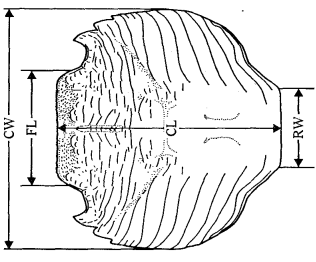
| sp | sex | index | FL | RW | CL | CW |
|---|---|---|---|---|---|---|
| B | M | 1 | 8.1 | 6.7 | 16.1 | 19.0 |
| B | M | 2 | 8.8 | 7.7 | 18.1 | 20.8 |
| B | M | 3 | 9.2 | 7.8 | 19.0 | 22.4 |
| B | M | 4 | 9.6 | 7.9 | 20.1 | 23.1 |
| B | M | 5 | 9.8 | 8.0 | 20.3 | 23.0 |
| B | M | 6 | 10.8 | 9.0 | 23.0 | 26.5 |
| B | M | 7 | 11.1 | 9.9 | 23.8 | 27.1 |
| B | M | 8 | 11.6 | 9.1 | 24.5 | 28.4 |
| B | M | 9 | 11.8 | 9.6 | 24.2 | 27.8 |
| B | M | 10 | 11.8 | 10.5 | 25.2 | 29.3 |
🦀 Application : Question de recherche
Y a-t-il un lien linéaire entre la longueur de la carapace (CL) et celle du lobe frontal (FL) ?
📖 Objectifs du cours
- Comment construire un modèle linéaire ? (Exemple & Définition)
- Comment trouver la droite qui décrit le mieux les données ? (Moindres carrés)
- Comment savoir si cette droite est de bonne qualité ? (Coefficient de détermination R²)
- Quelles sont les hypothèses à vérifier avant de faire la régression ?
- Application aux données de crabe avec R
- Exemple de contribution en sciences vétérinaire & Conclusion
📖 Objectifs du cours
1. Comment construire un modèle linéaire ? (Exemple & Définition)
- Comment trouver la droite qui décrit le mieux les données ? (Moindres carrés)
- Comment savoir si cette droite est de bonne qualité ? (Coefficient de détermination R²)
- Quelles sont les hypothèses à vérifier avant de faire la régression ?
- Application aux données de crabe avec R
- Exemple de contribution en sciences vétérinaire & Conclusion
1️⃣ Écriture du modèle : Intuition
On considère \(n\) individus et on utilise \(_i\) pour décrire le \(i-\)ème (avec \(i = \{1, ..., n\}\)).
\[ CL_i = \cdots \ FL_i \]
1️⃣ Écriture du modèle : Intuition
On considère \(n\) individus et on utilise \(_i\) pour décrire le \(i-\)ème (avec \(i = \{1, ..., n\}\)).

équation d’une droite :
\[ y = \color{#CC79A7}{\beta_0} + \color{#009E73}{\beta_1} \times x \]

\[ CL_i = \color{#CC79A7}{\beta_0} + \color{#009E73}{\beta_1}FL_i \]
1️⃣ Écriture du modèle : Intuition
On considère \(n\) individus et on utilise \(_i\) pour décrire le \(i-\)ème (avec \(i = \{1, ..., n\}\)).
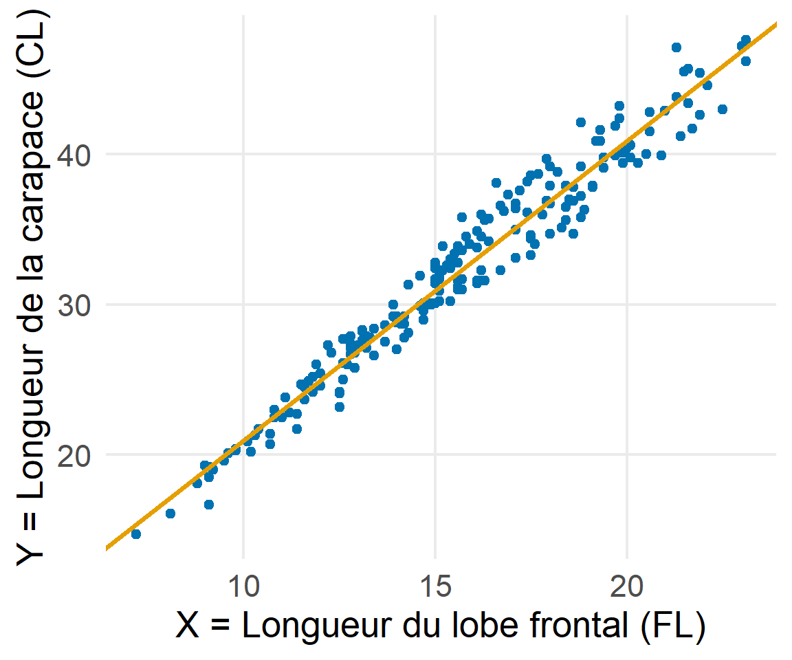
équation d’une droite :
\[ y = \color{#CC79A7}{\beta_0} + \color{#009E73}{\beta_1} \times x \]
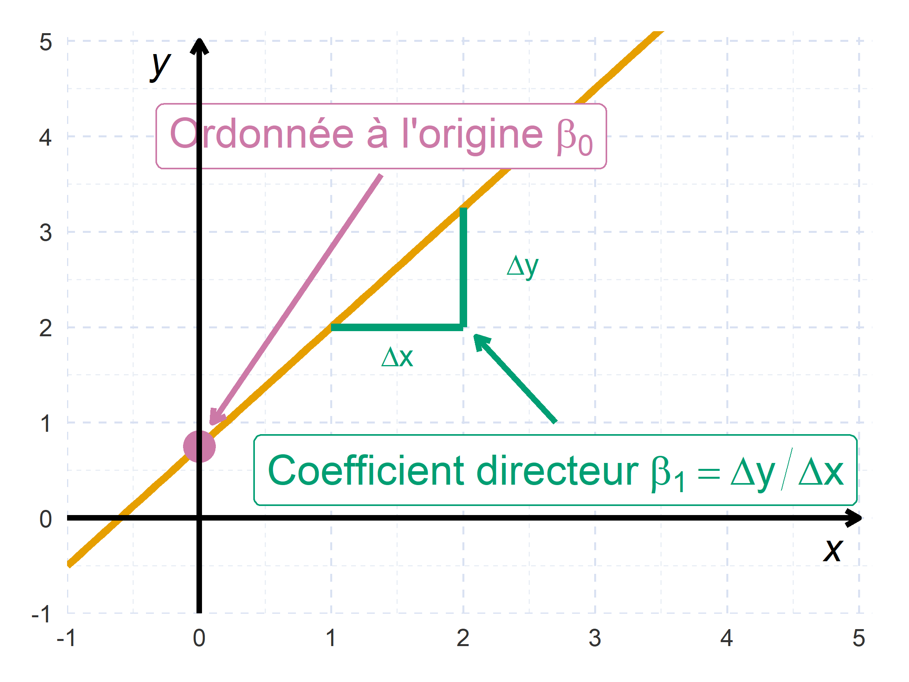
\[ CL_i = \color{#CC79A7}{\beta_0} + \color{#009E73}{\beta_1}FL_i + \epsilon_i \]
1️⃣ Écriture du modèle : Définition
Définition : Modèle linéaire
On mesure sur un individu \(i\) \(Y_i\) la variable à expliquer et \(X_i\) la variable explicative. Le modèle linéaire décrit la relation (linéaire) entre \(Y_i\) et \(X_i\) sous la forme :
\[ Y_i = \color{#CC79A7}{\beta_0} + \color{#009E73}{\beta_1}X_i + \epsilon_i \]
où \(\color{#CC79A7}{\beta_0}\) est l’ordonnée à l’origine, \(\color{#009E73}{\beta_1}\) le coefficient directeur et \(\epsilon\) un bruit (aléatoire).
Note
La régression linéaire désigne l’estimation de paramètres \(\color{#CC79A7}{\beta_0}\) et \(\color{#009E73}{\beta_1}\) à partir des données observées.
📖 Objectifs du cours
- Comment construire un modèle linéaire ? (Exemple & Définition)
2. Comment trouver la droite qui décrit le mieux les données ? (Moindres carrés)
- Comment savoir si cette droite est de bonne qualité ? (Coefficient de détermination R²)
- Quelles sont les hypothèses à vérifier avant de faire la régression ?
- Application aux données de crabe avec R
- Exemple de contribution en sciences vétérinaire & Conclusion
2️⃣ Estimation par moindres carrés : Intuition
La régression linéaire permet de trouver la droite d’équation \(y = \beta_0 + \beta_1x\) qui décrit le mieux les données.
2️⃣ Estimation par moindres carrés : Notations1
Notations :
\(y_i\) est l’observation pour l’individu \(i\)
\(\longrightarrow \hat{y_i}\) est l’observation estimée pour l’individu \(i\)
\(\beta_0\) et \(\beta_1\) sont les paramètres
\(\longrightarrow \hat{\beta_0}\) et \(\hat{\beta_1}\) sont les paramètres estimés
- \(e_i = y_i - \hat{y_i}\) est l’erreur/résidu pour l’individu \(i\)
On cherche \(\hat{\beta_0}\) et \(\hat{\beta_1}\) tels que la somme des erreurs au carré pour chaque individu est la plus petite possible :
\[ \hat{\beta_0}, \hat{\beta_1} = \arg\min_{\beta_0, \beta_1} \sum_{i=1}^{N} \left[ y_i - \underbrace{(\hat{\beta}_0+\hat{\beta}_1 x_i)}_{\hat{y}_i} \right]^2. \]
2️⃣ Estimation par moindres carrés : Résolution
On cherche \(\hat{\beta_0}\) et \(\hat{\beta_1}\) tels que la somme des erreurs au carré est minimale, c’est-à-dire que :
\[ \hat{\beta_0}, \hat{\beta_1} = \arg\min_{\beta_0, \beta_1} \sum_{i = 1}^N (y_i - \hat{y_i})^2. \]
En dérivant, on obtient comme solution :
\[ \color{#CC79A7}{\hat{\beta_0}} = \bar{y} - \hat{\beta_1} \bar{x}, \]
où \(\bar{y}\) et \(\bar{x}\) désigne la moyenne des \(y\) et \(x\). Et :
\[ \color{#009E73}{\hat{\beta_1}} = \frac{\sum_{i = 1}^N (x_i - \bar{x})(y_i - \bar{y})}{\sum_{i = 1}^N (x_i - \bar{x})^2}. \]
2️⃣Estimation par moindres carrés : Exemple
\(\color{#009E73}{\hat{\beta_1}} = \frac{\sum_{i = 1}^N (x_i - \bar{x})(y_i - \bar{y})}{\sum_{i = 1}^N (x_i - \bar{x})^2}\)
\(= \frac{4846.979}{2431.242}\)
\(= 1.994 \quad (= \frac{\Delta y}{\Delta x}).\)
\(\color{#CC79A7}{\hat{\beta_0}} = \bar{y} - \hat{\beta_1}\bar{x}\)
\(= 32.106 - \hat{\beta_1} \times 15.583\)
\(= 1.039 \quad ( = \text{ordonnée à l'origine}).\)
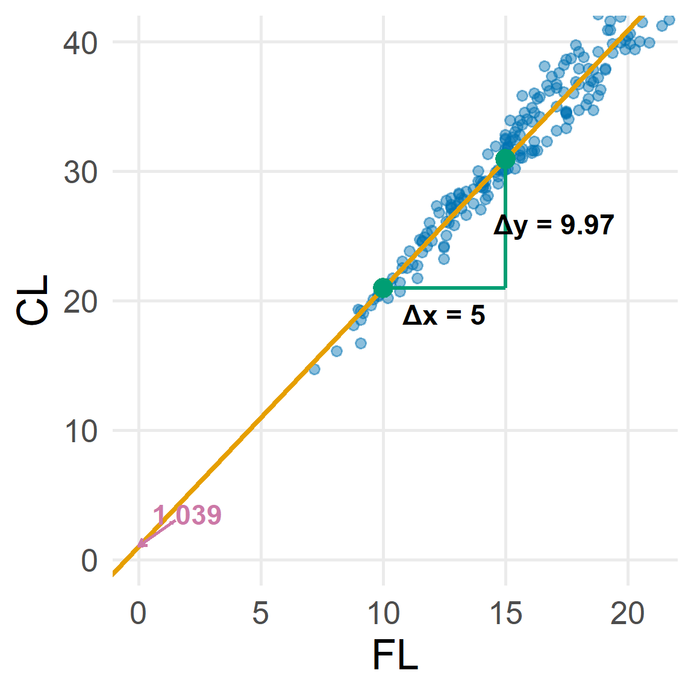
📖 Objectifs du cours
- Comment construire un modèle linéaire ? (Exemple & Définition)
- Comment trouver la droite qui décrit le mieux les données ? (Moindres carrés)
3. Comment savoir si cette droite est de bonne qualité ? (Coefficient de détermination R²)
- Quelles sont les hypothèses à vérifier avant de faire la régression ?
- Application aux données de crabe avec R
- Exemple de contribution en sciences vétérinaire & Conclusion
3️⃣ Qualité de la droite de régression avec \(R^2\) : Intuition
Pour évaluer la qualité de la droite de régression on calcule le coefficient de détermination ou \(R^2\) qui mesure à quel point le modèle explique les données.
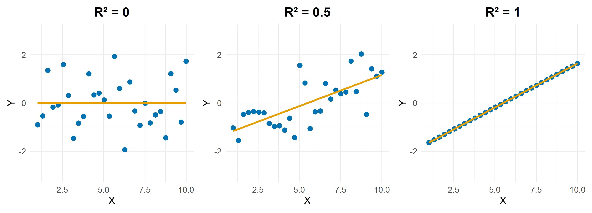
Note
La valeur du \(R^2\) vaut entre \(0\) et \(1\) et décrit la proportion de variabilité de \(Y\) expliqué par le modèle.
3️⃣ Qualité de la droite de régression avec \(R^2\) : Calcul
\[ R^2 = \frac{\sum_{i = 1}^{N} (\hat{y_i} - \bar{y})^2}{\sum_{i = 1}^{N} (\hat{y_i} - y_i)^2} = 1 - \frac{\sum_{i = 1}^{N} (y_i - \hat{y_i})^2}{\sum_{i = 1}^{N} (y_i - \bar{y})^2}, \]
où :
\(\sum_{i = 1}^{N} (\hat{y_i} - y_i)^2 =\) somme des erreurs/résidus
\(\longrightarrow\) Erreur de prédiction du modèle linéaire.
\(\sum_{i = 1}^{N} (\hat{y_i} - \bar{y})^2 =\) somme des carrés expliqués
\(\longrightarrow\) Erreur de prédiction si on prédit toujours la moyenne \(\bar{y}\).
- \(\sum_{i = 1}^{N} (y_i - \bar{y})^2 =\sum_{i = 1}^{N} (\hat{y_i} - \bar{y})^2 + \sum_{i = 1}^{N} (\hat{y_i} - y_i)^2.\)
Le \(R^2\) indique à quel point le modèle linéaire prédit mieux les observations que si on les prédisait toujours la moyenne \(\bar y\). »
3️⃣ Qualité de la droite de régression avec \(R^2\) : Exemple
\(R^2 =1 - \frac{\sum_{i = 1}^{N} (y_i - \hat{y_i})^2}{\sum_{i = 1}^{N} (y_i - \bar{y})^2}\)
\(= 1 - \frac{422.259}{10085.3}\)
\(= 0.958.\)
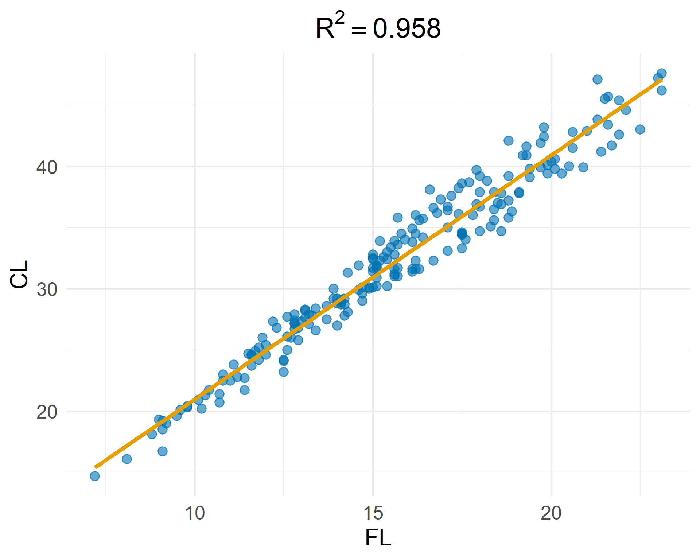
3️⃣ Qualité de la droite de régression avec \(R^2\) - Bonus
La corrélation, notée \(r\), quantifie la force d’un lien entre deux variables \(X\) et \(Y\).
\[ r = signe(\beta_1)\sqrt(R^2). \]
Note
La valeur de la corrélation vaut entre \(-1\) et \(+1\) et mesure à quel point et dans quel sens \(X\) et \(Y\) sont liés.
📖 Objectifs du cours
- Comment construire un modèle linéaire ? (Exemple & Définition)
- Comment trouver la droite qui décrit le mieux les données ? (Moindres carrés)
- Comment savoir si cette droite est de bonne qualité ? (Coefficient de détermination R²)
4. Quelles sont les hypothèses à vérifier avant de faire la régression ?
- Application aux données de crabe avec R
- Exemple de contribution en sciences vétérinaire & Conclusion
4️⃣ Pourquoi vérifier les hypothèses du modèle avant de le réaliser ?
Objectif : S’assurer que les résultats du modèle sont fiables.
Pourquoi est-ce important ?
Vérifier qu’utiliser un modèle linéaire est adapté aux données qu’on étudie.
Pouvoir faire confiance aux conclusions quand on interprète les résultats.
Eviter de tirer des conclusions trompeuses sur de nouvelles observations lorsqu’on fait de la prédiction.
\(\longrightarrow\) Une droite qui semble bien ajustée aux données ne garantit pas que les conclusions sont correctes !
4️⃣ 1ère hypothèse à vérifier : Indépendance
- Que signifie cette hypothèse ? Les observations ne doivent pas dépendre les unes des autres.
Exemple : si on mesure plusieurs fois le même animal, les mesures risquent de se ressembler davantage que celles provenant d’animaux différents.
| La mesure prise sur un individu n’a pas d’influence sur celle prise sur un autre. |
- Que faire si l’hypothèse n’est pas vérifiée ? Regrouper les données par individu ou utiliser un autre modèle qui prend en compte les dépendances entre observations.
4️⃣ 2ème hypothèse à vérifier : Linéarité
- Que signifie cette hypothèse ? Le lien entre \(X\) et \(Y\) peut être, globalement (en moyenne), représenté par une droite.
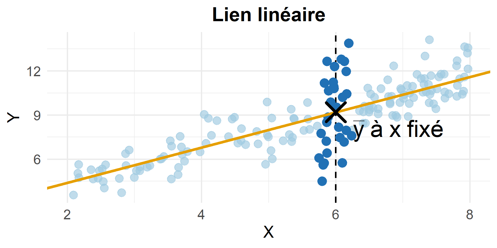
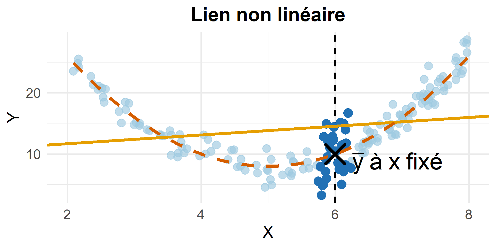
| A \(x\) fixé, les points observés \(y\) sont « groupés » autour de la droite de régression. |
Que faire si l’hypothèse n’est pas vérifiée ? Transformer \(X\) ou \(Y\) (ex. : logarithme) pour rendre la relation plus linéaire, ou utiliser un modèle adapté aux relations non linéaires.
4️⃣ 3ème hypothèse à vérifier : Egalité de la dispersion des données
- Que signifie cette hypothèse ? Toutes les observations sont dispersées de manière similaire autour de la droite.
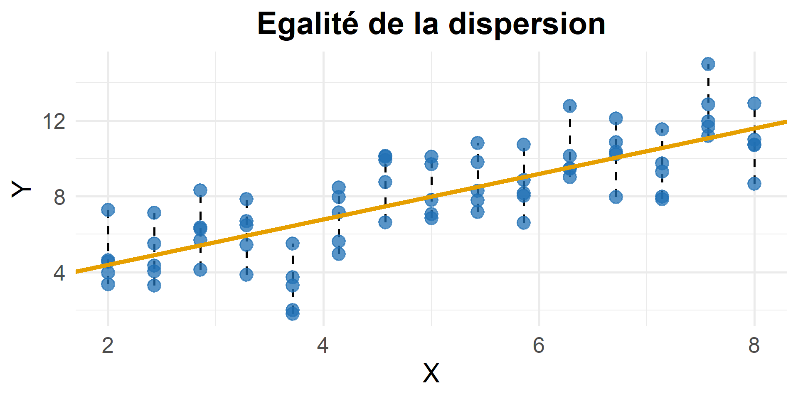
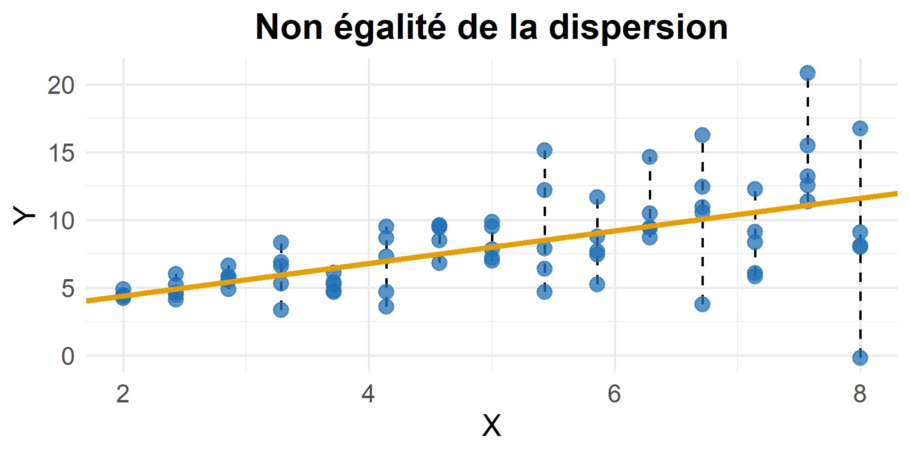
| La dispersion des \(Y\) est constante quelque soit la valeur de \(X\) : c’est l’homoscédasticité. |
Que faire si l’hypothèse n’est pas vérifiée ? Transformer \(Y\) (ex. logarithme) ou utiliser une régression qui tient compte des différences de dispersion.
4️⃣ Vérification des hypothèses sur les données de crabes
- Indépendance : ✅ SUPPOSE Les crabes n’ont pas de lien entre (ex. ils n’appartiennent pas à la même famille).
- Linéarité : ✅ Aelien entre \(x\) et ^\(y\) est linéaire.
- Homoscédasticité : ✅ La dispersion des \(y\) est constante.
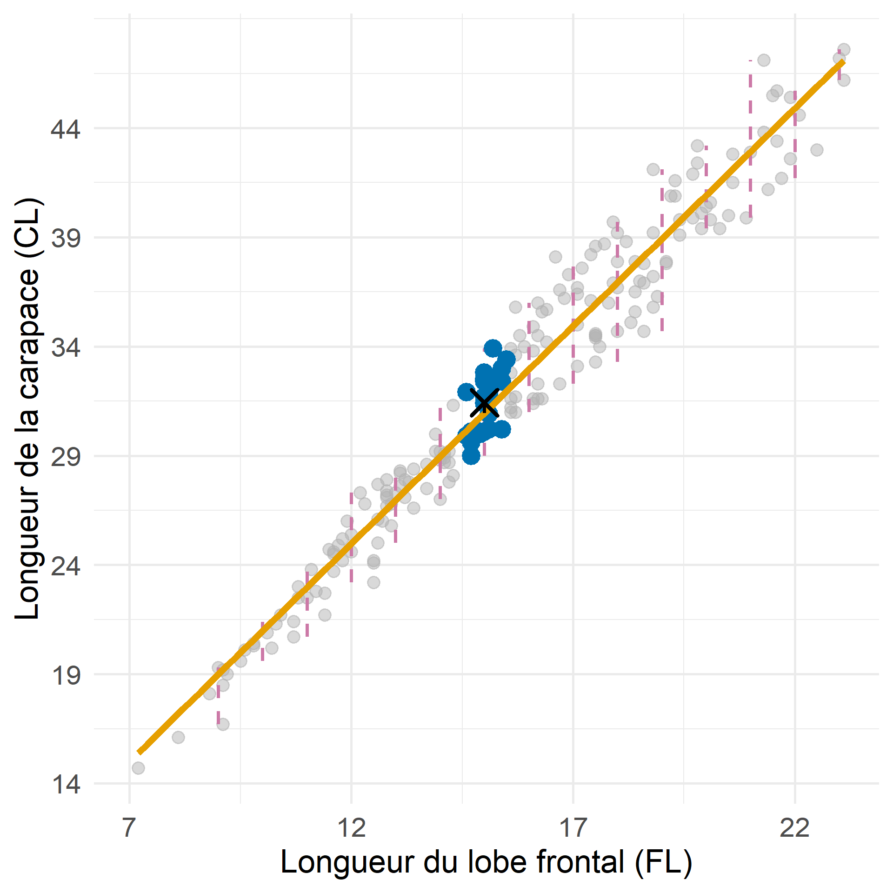
📖 Objectifs du cours
- Comment construire un modèle linéaire ? (Exemple & Définition)
- Comment trouver la droite qui décrit le mieux les données ? (Moindres carrés)
- Comment savoir si cette droite est de bonne qualité ? (Coefficient de détermination R²)
- Quelles sont les hypothèses à vérifier avant de faire la régression ?
5. Application aux données de crabe avec R
- Exemple de contribution en sciences vétérinaire & Conclusion
🦀 Application aux données de crabe avec R
Y a-t-il un lien linéaire entre la longueur de la carapace (CL) et celle du lobe frontal (FL) ?
To Do :
- Tracer le nuage de points des données pour voir le lien entre les variables
- Vérifier les hypothèses du modèle
- Calculer la droite régression et analyse de sa qualité
- Interpréter les résultats
🦀 Application aux données de crabe - 1 - Visualisation
# Plot
ggplot(
crabs, # le nom du dataframe (tableau)
aes(x = FL, y = CL)
) +
geom_point( # on veut faire un nuage de point
size = 4,
color = "#0072B2"
) +
labs( # titre des axes
x = "X = Longueur du lobe frontal (FL)",
y = "Y = Longueur de la carapace (CL)"
) +
theme_minimal(base_size = 20) # taille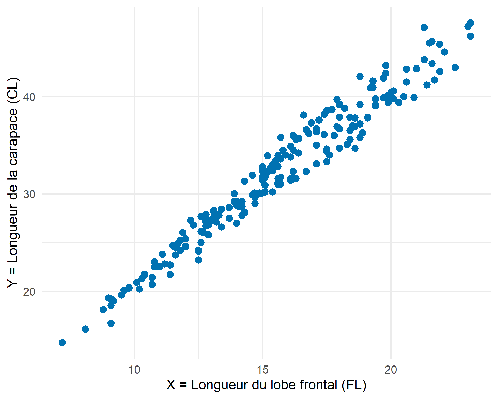
🦀 Application aux données de crabe - 2 - Vérifier les hypothèses
PETIT TEASER :)
Dans un prochain cours, nous verrons comment vérifier automatiquement les hypothèses du modèle, pour l’instant on regarde juste le profil des données.
🦀 Application aux données de crabe - 3 - Régression
\(\color{#CC79A7}{\hat{\beta_0}} = 1.038\)
\(\longrightarrow\) Interprétation : Quand le lobe frontal (FL) mesure \(0\)cm, la carapace (CL) en mesure \(1.038\) {Pas forcément d’interprétation sensée}.
\(\color{#009E73}{\hat{\beta_1}} = 1.993\)
\(\longrightarrow\) Interprétation : Si le lobe frontal (FL) grandit d’1cm, la carapace va grandir de \(1.993\)cm.
Call:
lm(formula = CL ~ FL, data = crabs)
Residuals:
Min 1Q Median 3Q Max
-3.4203 -1.0432 -0.1037 0.9931 3.9670
Coefficients:
Estimate Std. Error t value Pr(>|t|)
(Intercept) 1.03888 0.47293 2.197 0.0292 *
FL 1.99362 0.02962 67.313 <2e-16 ***
---
Signif. codes: 0 '***' 0.001 '**' 0.01 '*' 0.05 '.' 0.1 ' ' 1
Residual standard error: 1.46 on 198 degrees of freedom
Multiple R-squared: 0.9581, Adjusted R-squared: 0.9579
F-statistic: 4531 on 1 and 198 DF, p-value: < 2.2e-16- \(R^2 = 0.958\)
\(\longrightarrow\) Interprétation : On explique \(95.8\%\) des données avec la droite.
🦀 Application aux données de crabe - 4 - Conclusion
# même plot qu'au début
ggplot(
crabs, # nom du dataframe (tableau)
aes(x = FL, y = CL)
) +
geom_point( # on veut faire un nuage de point
size = 4,
color = "#0072B2"
) +
labs( # titre des axes
x = "X = Longueur du lobe frontal (FL)",
y = "Y = Longueur de la carapace (CL)"
) +
theme_minimal(base_size = 20) + # taille
geom_smooth( # droite de régression
method = "lm",
se = FALSE,
color = "#E69F00",
linewidth = 2
)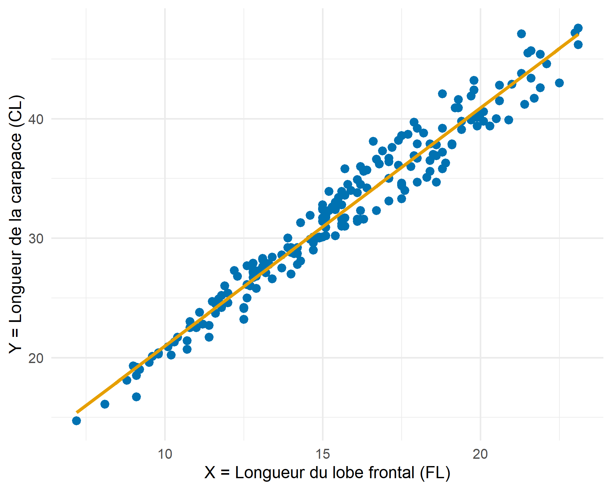
Il y a un lien linéaire entre la longueur de la carapace (CL) et celle du lobe frontal (FL) donnée par la relation :
\(CL_i = \color{#CC79A7}{1.039} + \color{#009E73}{1.994} \times FL_i + \epsilon_i\).
📖 Objectifs du cours
- Comment construire un modèle linéaire ? (Exemple & Définition)
- Comment trouver la droite qui décrit le mieux les données ? (Moindres carrés)
- Comment savoir si cette droite est de bonne qualité ? (Coefficient de détermination R²)
- Quelles sont les hypothèses à vérifier avant de faire la régression ?
- Application aux données de crabe avec R
6. Exemple de contribution en sciences vétérinaire & Conclusion
📑 Exemple d’utilisation en sciences vétérinaires
Exemple issu de : Bicalho et al. (2008)
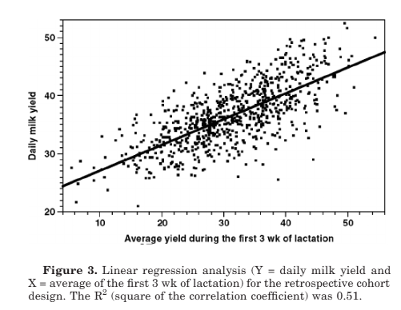
Note
Dans la régression linéaire présentée dans cet article on s’intéresse à la question : La production de lait en début de lactation permet-elle d’expliquer la production de lait sur l’ensemble de la lactation ?
🎯 Conclusion
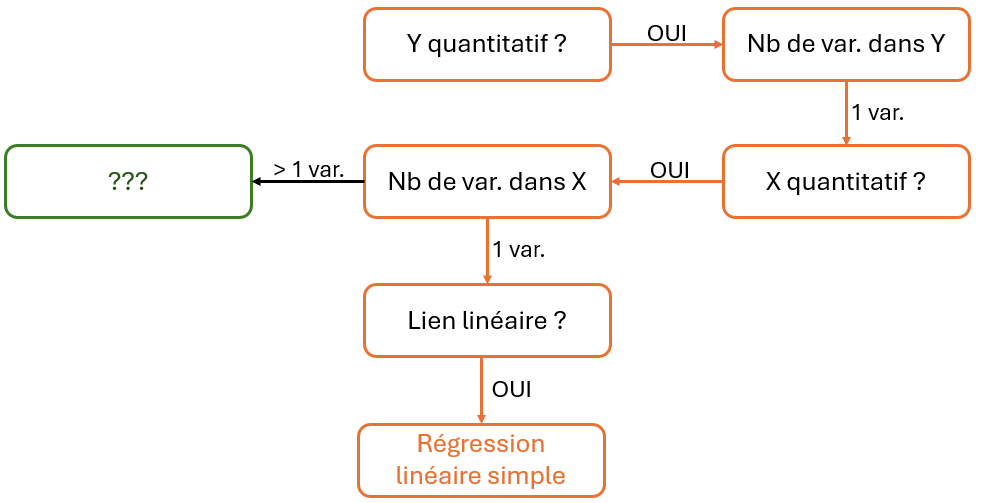
📌 programme du prochain cours : Régression linéaire multiple.
📝 Quiz de fin de séance
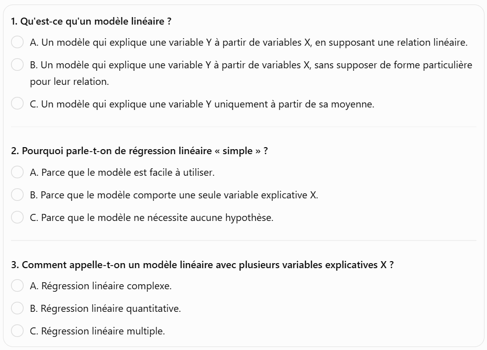
Références
Bicalho, R. C., L. D. Warnick, and C. L. Guard. 2008. “Strategies to Analyze Milk Losses Caused by Diseases with Potential Incidence Throughout the Lactation: A Lameness Example.” Journal of Dairy Science 91 (7): 2653–61. https://doi.org/10.3168/jds.2007-0744.
Campbell, NA, and RJ Mahon. 1974. “A Multivariate Study of Variation in Two Species of Rock Crab of the Genus Leptograpsus.” Australian Journal of Zoology 22 (3): 417–25. https://doi.org/10.1071/zo9740417.